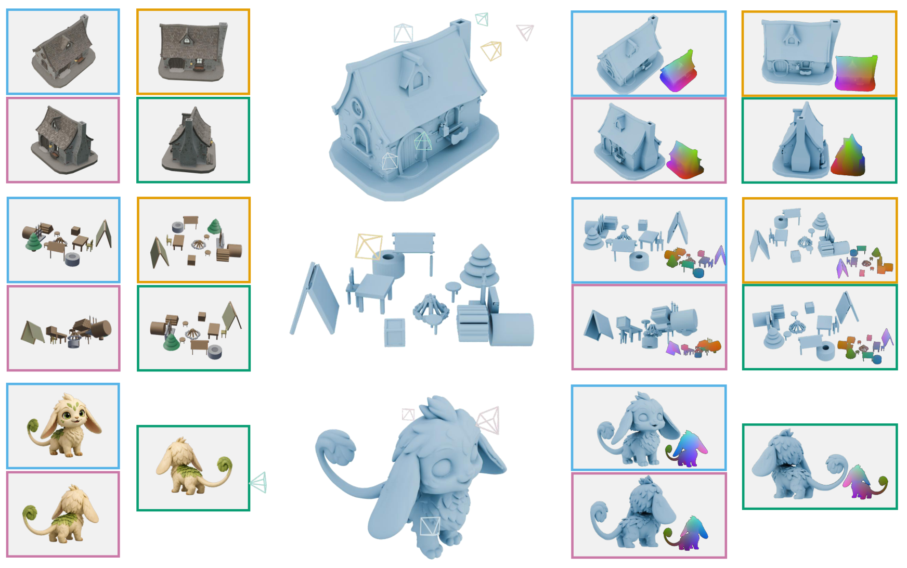

 TwinRecon: Unposed Generative Reconstruction via Coupled Shape-Pointmap Diffusion Jinjian Zhao*, Jiahao Chang*, Yushuang Wu, Xianzu Wu, Yan-Pei Cao, Zi-Xin Zou, Xiaoguang Han SIGGRAPH Asia 2026 Paper * Equal contribution.